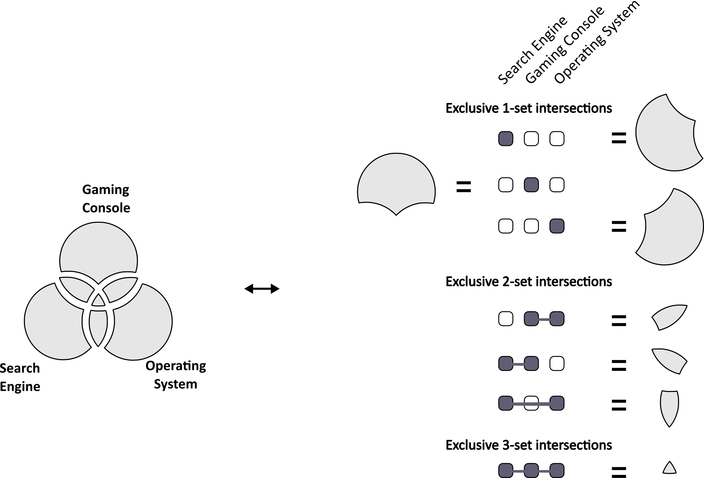
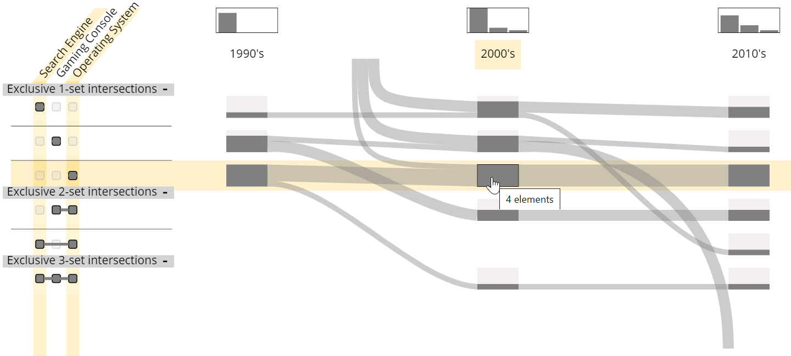
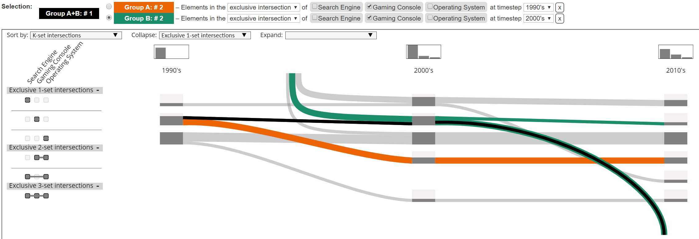
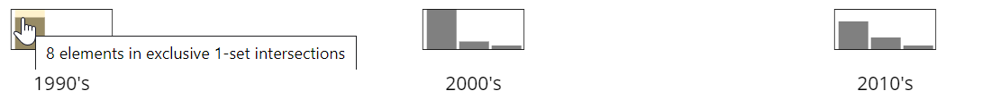

1. Exclusive intersections are those "regions" which are shared ONLY by sets involved in the overlap. The concept of exclusive intersections can be explained by highlighting the correspondance with Venn diagram, as shown in the figure below:

2. We represent each exclusive intersection in a row and place timesteps in columns. Hovering over a node highlights cardinality of the exclusive intersection, sets involved in the intersection, and the corresponding timestep. 
3. The rows can be sorted based on several criteria from the drop-down list. The rows can also be collapsed/expanded based on the number of sets involved in intersections.
4. Set Streams supports interactive selection of elements in dynamic set data either by specifying criteria of selection or by selecting the rectangular nodes and edges. Two selections can be performed simultaneously. "Group A" contains resulting elements from first selection (orange), while "Group B" contains resulting elements from second selection (green). Since there can be elements which are present in both selections, they are contained in "Group A+B" and marked with black color.

5. For each timestep, degree distribution of elements is drawn in rectangular boxes and placed above timestep labels.

6. The element list shows all elements present in the dataset. They are sorted first on the selection group they belong to and second in alphabetical order of their names.